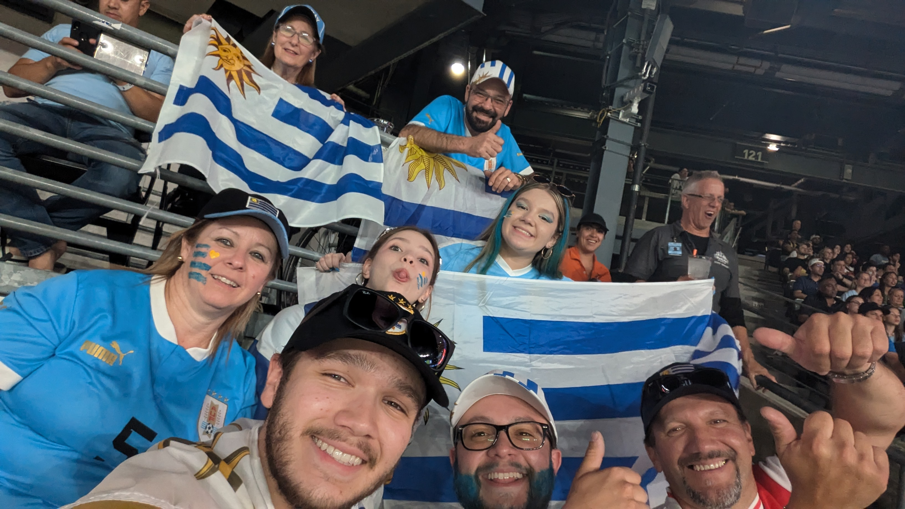
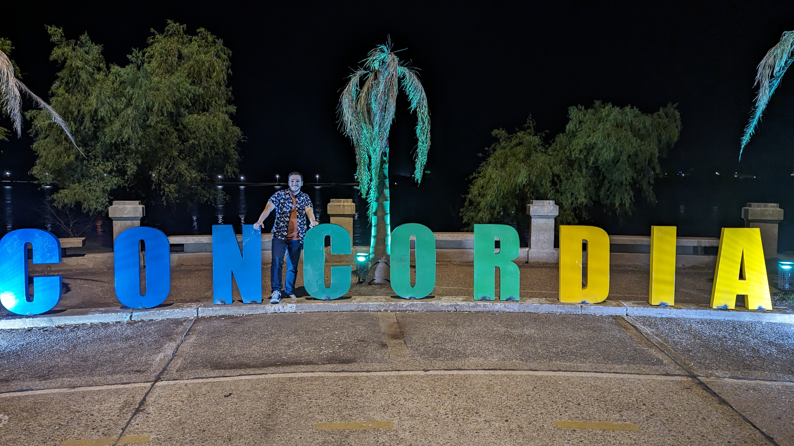

I'm a third year student at the University of Virginia pursuing a Bachelor's Degree in Computer Science with a minor in Data Analytics. I yet don't know if I want to specialize in Software Development or Cybersecurity as my career path.
I grew up most of my life in Uruguay, which means I'm really into soccer. My main teams are Peñarol and Barcelona!
Another major trait that comes with being Uruguayan is eating asado every weekend and drinking mate all day, everywhere we go.
Something else about me is that I love learning new languages and travelling around the world. So far, I've been to five countries: USA, Uruguay, Argentina, Brazil, and the UK. Hopefully I can increase that number soon!
